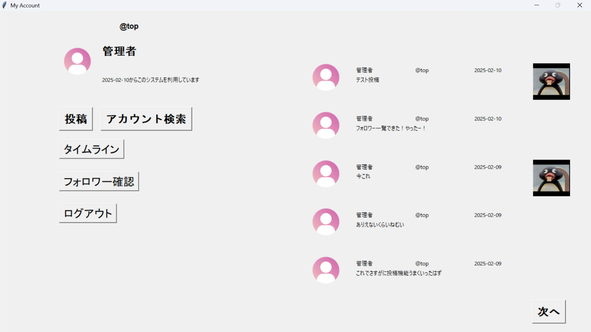

1年次Python期末課題

PythonのGUIライブラリであるtkinterを使用して開発したSNSアプリケーションです。ユーザー認証、投稿、フォロー機能など、実際のSNSに必要な基本機能を実装しました。
Pythonの講義の期末課題として、14日間で開発しました。複数の課題候補の中で最も難易度の高いSNSアプリにチャレンジすることで、より実践的なスキルを身につけたいと考えました。
個人開発(バックエンド、フロントエンド、データベース設計をすべて担当)
| Python 3.12.3 |
| tkinter (GUIフレームワーク) |
| MySQL (データベース) |
| MySQLdb (PythonとMySQLを接続) |
| smtplib, emailライブラリ(メール送信) |
投稿一覧の表示方法に最も苦労しました。当初はすべての投稿を一度に表示することを考えていましたが、パフォーマンスとUIの観点から、SQLのLIMITとOFFSETを活用したページネーション方式を採用しました。新しい投稿から5件ずつ取得して表示し、次ページボタンで次の5件を表示する仕組みを実装することで、データベースへの負荷を抑えながら使いやすいインターフェースを実現しました。